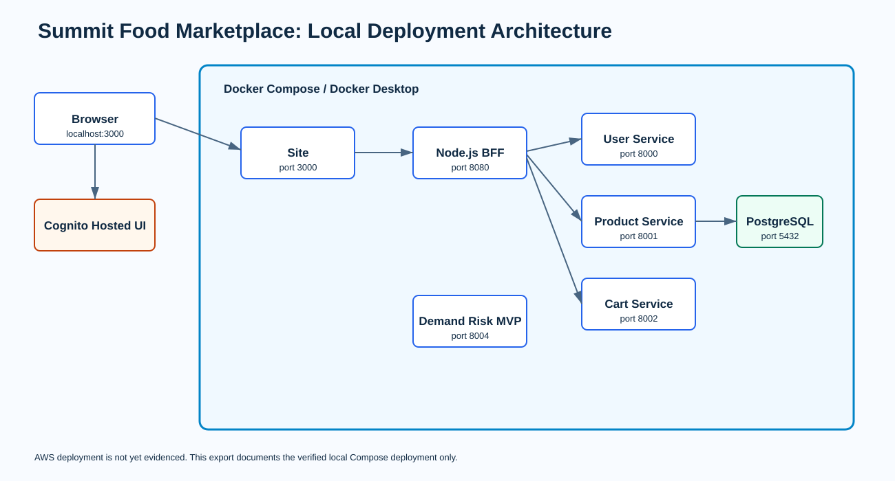

Summit Food Marketplace
A role-aware food marketplace with a separate 4IR demand-risk decision-support MVP.
Customer discovery and cart. Supplier submissions. Data Steward review and approval.
Make food discovery and product governance reliable
Customers need approved product availability. Suppliers need ownership over their listings. Data Stewards need a traceable approval workflow.
Rules enforced: visibility, ownership, one active cart, inventory validation, approval reasons, authorization, and auditability.
A full-stack microfrontend system
- React, Redux, and single-spa micro frontends.
- Node.js BFF for tokens, routing, and normalized errors.
- FastAPI product, cart, and user services with PostgreSQL.
Cognito configuration and server-side role validation are implemented. Live AWS role evidence must be recorded after account setup.
Actual local deployment

Show this exact journey
- Supplier creates a pending product.
- Data Steward approves it and shows history.
- Customer searches, views, adds, updates, then removes it from the active cart.
- An unauthorized action is rejected safely.
Use actual authenticated Cognito users for the final recording. Do not substitute mock behavior in the recorded role flow.
Repeatable checks
- Six Cypress marketplace journeys pass locally.
- Pytest, Ruff, ESLint, Vite build, and Compose validation pass locally.
- The demand-risk MVP test suite passes.
Synthetic demand-risk scenarios classified as expected.
Meaningful input and output
Submit the Strawberry scenario to POST /demand-risk. Show high risk, demand forecast, stock cover, reorder recommendation, and explanation.
Then submit negative sales. The API returns a safe validation failure instead of calculating a misleading result.
What this MVP does and does not prove
- No personal data or automatic purchase orders.
- Transparent recommendation with supplier control.
- Needs real supplier data and a pilot evaluation before production.
AWS HTTPS deployment, CloudWatch, budget, tags, SonarQube server scan, Cognito group evidence, and the actual recording are the remaining external proof items.